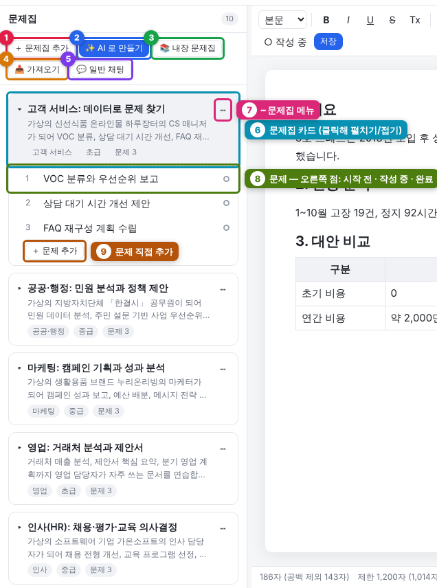
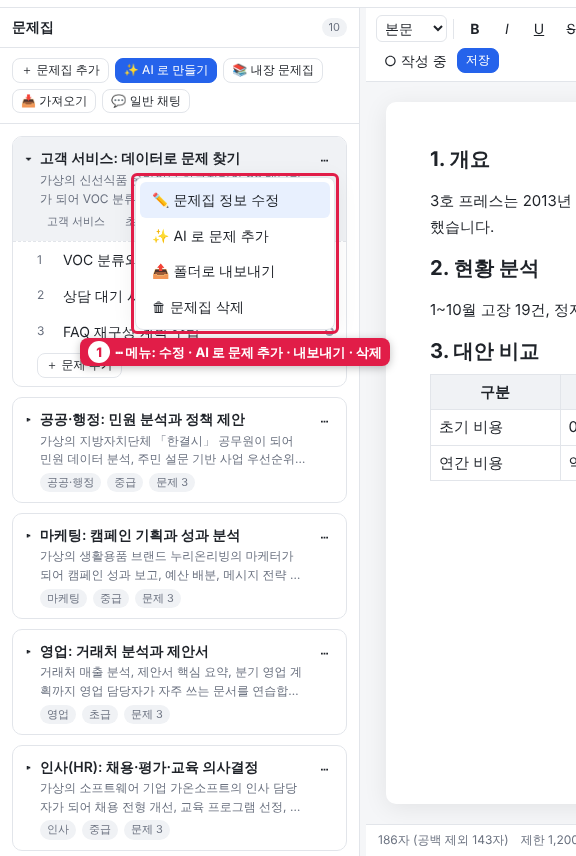
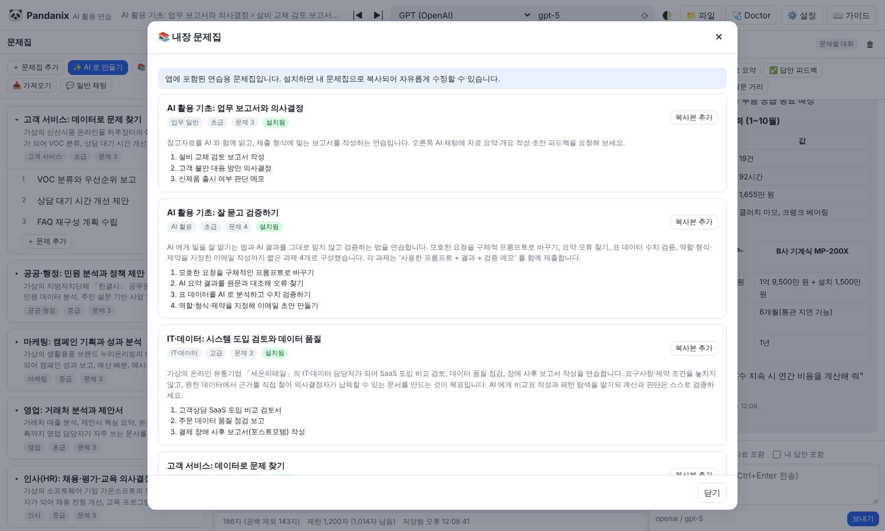
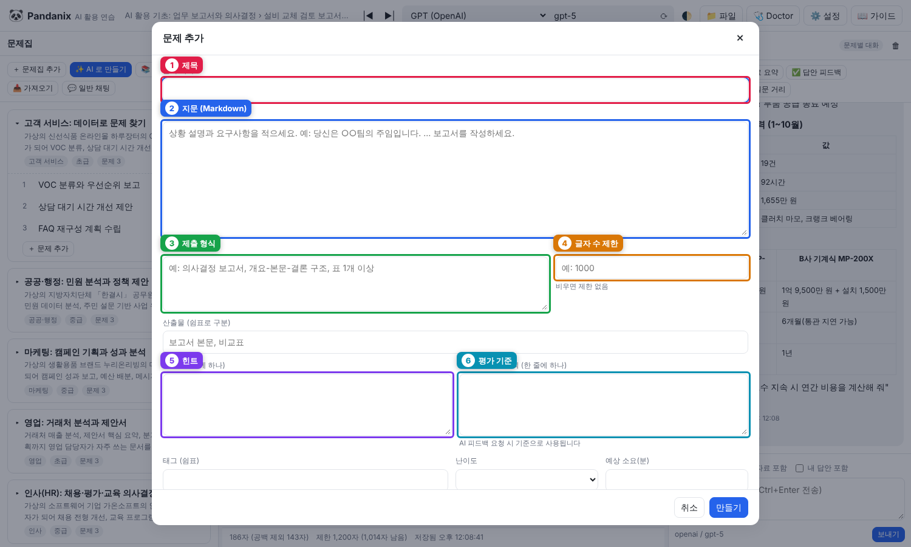
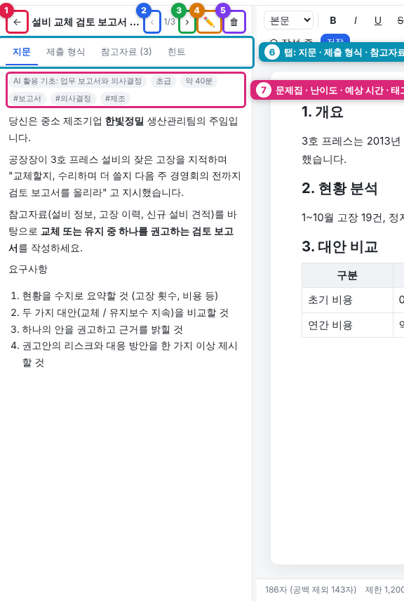
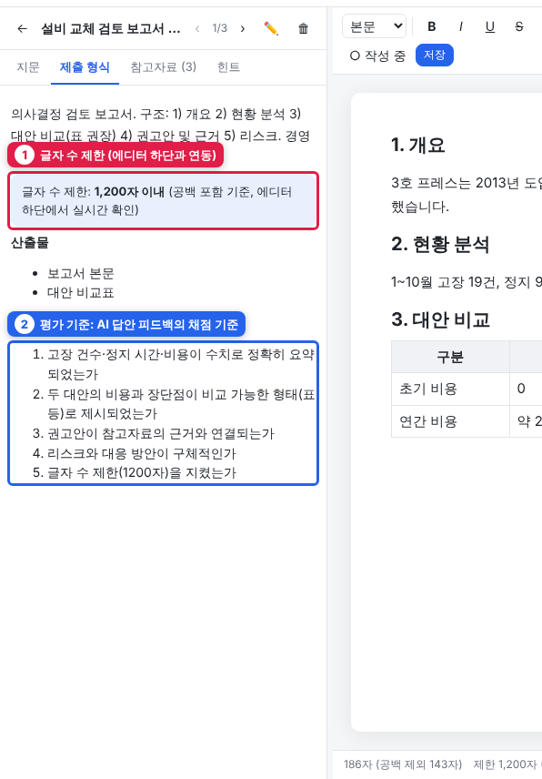
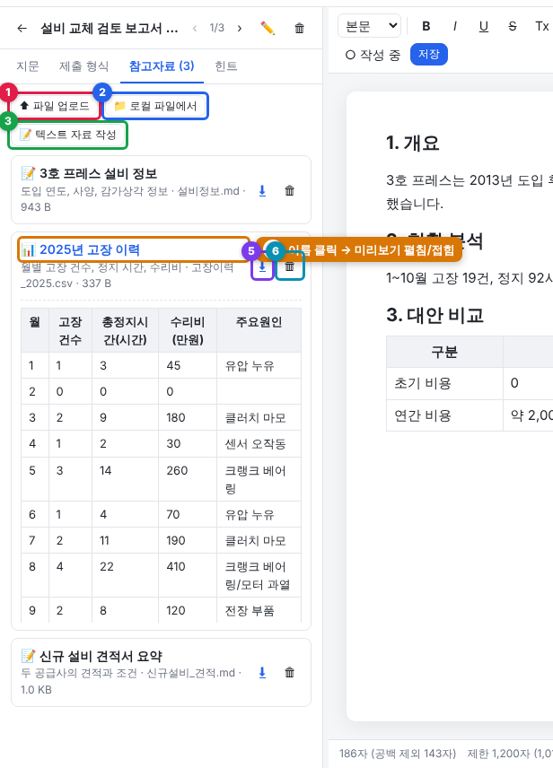
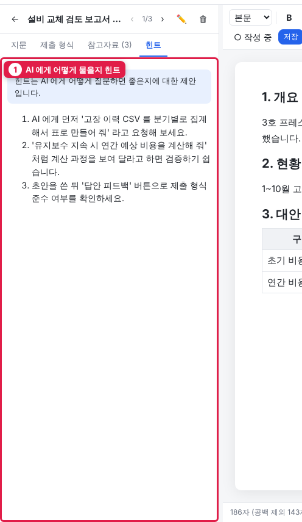

3. 문제집과 문제
구조
문제집 (제목, 설명, 분야, 난이도)
└─ 문제 (지문, 제출 형식, 참고자료, 힌트, 평가 기준, 태그)
└─ 참고자료 파일 (md, csv, txt, pdf, xlsx, 이미지 …)문제집 만들기

① 문제집 추가 ② AI 로 만들기 ③ 내장 문제집 ④ 가져오기 ⑤ 일반 채팅 ⑥ 문제집 카드(클릭해 펼치기) ⑦ ⋯ 메뉴 ⑧ 문제(오른쪽 점 = 진행 상태) ⑨ 문제 직접 추가
왼쪽 패널 상단 버튼:
| 버튼 | 동작 |
|---|---|
| ＋ 문제집 추가 | 빈 문제집 생성 → 이후 ＋ 문제 추가 로 문제를 직접 작성 |
| ✨ AI 로 만들기 | 주제만 넣으면 문제+참고자료 자동 생성 → 6장 |
| 📚 내장 문제집 | 앱에 포함된 분야별 문제집 10종(AI 활용 기초, 업무 보고서, 마케팅, 인사, 고객 서비스, 재무, 영업, 프로젝트 관리, 공공·행정, IT·데이터). 처음 실행 시 자동 설치되며, 지웠거나 업데이트로 새 문제집이 생기면 여기서 설치 |
| 📥 가져오기 | 다른 PC 에서 내보낸 문제집 폴더(workbook.json 포함) 선택. 폴더가 파일 접근 허용 폴더(7장) 안에 있어야 함 |
| 💬 일반 채팅 | 특정 문제와 무관한 자유 대화로 전환 |
문제집 제목 옆 ⋯ 메뉴: 정보 수정 · AI 로 문제 추가 · 폴더로 내보내기 · 삭제

내장 문제집 설치

① 문제집 카드(분야·난이도·문제 목록) ② 설치 / 이미 설치됐으면 복사본 추가
문제 작성 항목

① 제목 ② 지문 ③ 제출 형식 ④ 글자 수 제한 ⑤ 힌트 ⑥ 평가 기준
| 항목 | 설명 | 예 |
|---|---|---|
| 제목 | 목록에 표시 | 설비 교체 검토 보고서 작성 |
| 지문 | Markdown. 상황 + 요구사항 | 당신은 ○○팀 주임입니다. … 보고서를 작성하세요 |
| 제출 형식 | 산출물 형태와 구조 | 의사결정 보고서, 개요-현황-대안-권고 구조 |
| 글자 수 제한 | 숫자. 에디터 하단에 남은 글자 수 표시 | 1000 |
| 산출물 | 쉼표 구분 | 보고서 본문, 비교표 |
| 힌트 | AI 에게 어떻게 물을지 제안 | "고장 이력을 분기별로 집계해 줘" 라고 요청해 보세요 |
| 평가 기준 | AI 답안 피드백 의 채점 기준 | 수치가 정확히 요약되었는가 |
| 태그 / 난이도 / 예상 소요(분) | 목록과 지문 상단에 배지로 표시 | 보고서, 초급, 40 |
지문과 제출 형식은 Markdown 으로 쓰면 제목·목록·표가 예쁘게 표시됩니다.
문제 화면

① 목록으로 ② 이전 문제 ③ 다음 문제 ④ 문제 수정 ⑤ 문제 삭제 ⑥ 탭 ⑦ 문제집·난이도·예상 시간·태그

① 글자 수 제한은 에디터 하단 글자 수와 연동 ② 평가 기준은 AI "답안 피드백" 의 채점 기준
참고자료 추가

① 파일 업로드 ② 허용 폴더의 로컬 파일 복사 ③ 텍스트 자료 작성 ④ 이름 클릭 → 미리보기 ⑤ 다운로드 ⑥ 삭제
문제를 연 뒤 참고자료 탭:
| 버튼 | 설명 |
|---|---|
| ⬆ 파일 업로드 | 내 PC 의 파일을 브라우저로 업로드 (여러 개 가능) |
| 📁 로컬 파일에서 | 허용된 폴더(7장)에서 선택해 복사 |
| 📝 텍스트 자료 작성 | 앱 안에서 md/csv 를 바로 작성 |
- 자료 이름을 클릭하면 미리보기 (md → 서식, csv → 표, 이미지, pdf 지원)
- AI 가 읽을 수 있는 자료:
.md .txt .csv .json .tsv .html .xml .yaml등 텍스트 파일. 채팅에 "참고자료 포함" 이 켜져 있으면 내용이 통째로 전달됩니다 - pdf/xlsx/docx 등은 파일명과 설명만 AI 에게 전달됩니다. AI 가 읽게 하려면 텍스트(md/csv)로 변환해 올리세요
힌트 탭

AI 에게 어떻게 질문하면 좋은지에 대한 제안입니다. 문제를 만든 사람이 직접 적거나 AI 생성 시 함께 만들어집니다.
변경 사항 반영
문제·지문·참고자료를 추가/수정/삭제하면 화면이 바로 갱신됩니다. 다른 브라우저 탭이나 탐색기에서 data/ 폴더의 파일을 직접 바꾼 경우에도 창을 다시 클릭(포커스)하면 목록과 현재 문제를 다시 읽어 반영합니다.
문제 탐색
- 문제 화면 상단 ‹ › 로 이전/다음 문제, ← 로 목록
- 목록의 점 색: 회색=시작 전, 주황=작성 중, 초록=완료
- 💬 일반 채팅: 특정 문제와 무관한 자유 대화
내보내기 / 가져오기 형식
내보내기는 문제집 폴더를 그대로 복사합니다. 다른 PC 의 Pandanix 에서 📥 가져오기 로 선택하면 됩니다.
<문제집 제목>/
workbook.json
problems/<문제id>/problem.json
problems/<문제id>/references/*.md|csv|…직접 손으로 만들어도 가져올 수 있습니다. (관리자) 예시 폴더: server/seed/library/lib-basics/.